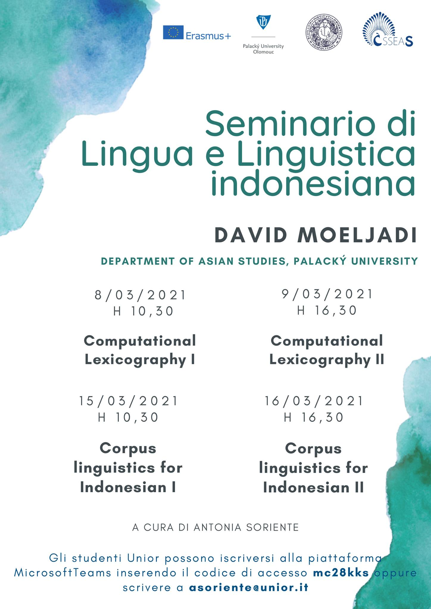

Teaching
Recent courses
Kanda University of International Studies (Japan) (2021~present)
- Basic Indonesian grammar for first-year undergraduates I-II(b)
インドネシア語基礎（文法）［学部1年生］
- Basic Indonesian grammar for second-year undergraduates III-IV(b)
インドネシア語基礎（文法）［学部2年生］
- Basic Indonesian conversation for first-year undergraduates I-II(c)
インドネシア語基礎（会話）［学部1年生］
- Basic Indonesian conversation for second-year undergraduates III-IV(c)
インドネシア語基礎（会話）［学部2年生］
- Basic Indonesian grammar tutorial for first-year undergraduates I-II(e)
インドネシア語基礎（文法練習）［学部1年生］
- Advanced Indonesian reading comprehension for third- and fourth-year undergraduates
インドネシア語総合（インドネシア事情・読解）［学部3、4年生］
- Advanced Indonesian grammar for third- and fourth-year undergraduates
インドネシア語総合（文法）［学部3、4年生］
- Advanced Indonesian sentence composition for third- and fourth-year undergraduates
インドネシア語総合（作文）［学部3、4年生］
- Research seminar for third- and fourth-year undergraduates
研究演習-48（ゼミ）［学部3、4年生］
Tokyo University of Foreign Studies (Japan) (2021~present)
- Introduction to Malay/Indonesian Linguistics
東南ｱｼﾞｱ言語研究4、ｱｼﾞｱ･ｱﾌﾘｶ言語研究B
（マレー・インドネシア語学概論）
Past courses
University of Naples L'Orientale (Italy) (2021)
- Seminar on Indonesian lexicography and corpus linguistics

Palacky University Olomouc (Czechia) (2019~2021)
Nanyang Technological University (Singapore) (2015)